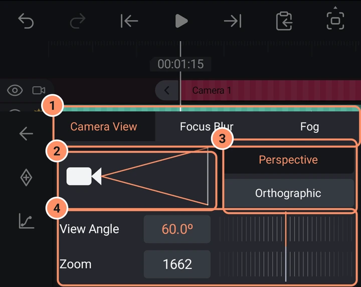
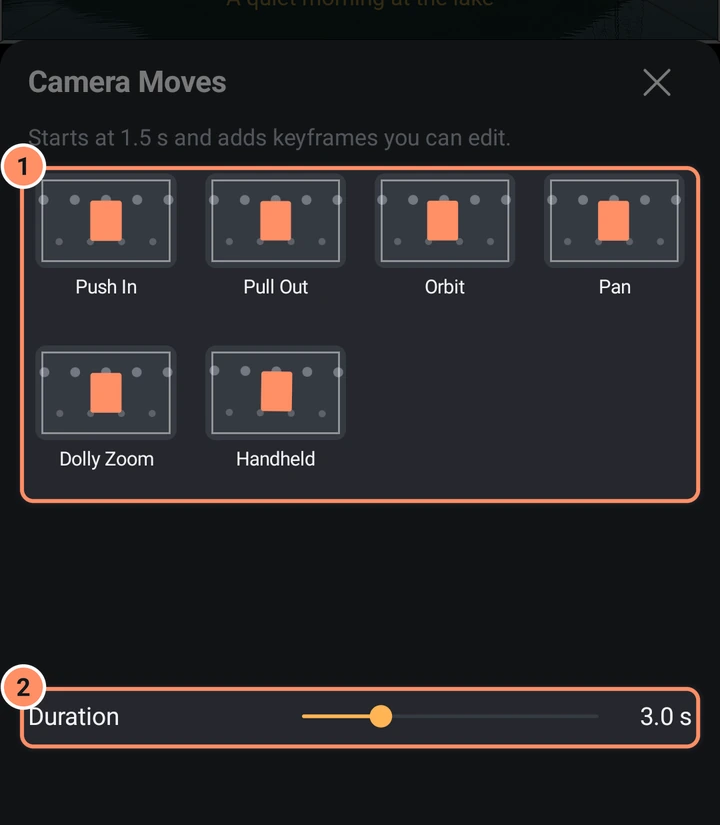

Cameralagen en 3D
Vlieg met een virtuele camera door je lagen, sorteer lagen op diepte, belicht de scène en voeg 3D-modellen toe.
Cameralagen
Een cameralaag maakt het project driedimensionaal: lagen krijgen een diepte (Z), en de camera bepaalt wat je ziet. Je voegt er een toe via Toevoegen, Object / asset, Camera. Hij duurt het hele project, gebruikt perspectief met een kijkhoek van 60 graden, en heeft focusvervaging en mist uitgeschakeld.
De eerste keer dat je een camera toevoegt, zie je de tip: "Open dit paneel en zet Cameraweergave aan om door de camera te kijken." De knop Cameraweergave zit in de voorbeeldstrook (zie Het editorscherm). Staat die aan, dan zie je het project door de camera. Anders zie je de camera's als donkere rechthoekige kaders in het voorbeeld.
Zijn er meerdere camera's, dan wordt de bovenste camera gebruikt die actief is bij de afspeelkop.
De camera verplaatsen
Selecteer de cameralaag. Sleep in het voorbeeld om hem te verschuiven en knijp om de kijkhoek te veranderen. In Transformeren werken Verplaatsen, Draaien en Grootte ook voor een camera; Grootte verandert de kijkhoek. Staat Dieptevolgorde aan (zie hieronder), dan werkt 3D-rotatie ook: daarmee laat je de camera omhoog, omlaag of opzij kijken. Zet het aan via Draaien, Meer, 3D-rotatie (op een computer is dat het tabblad Kantelen onder Geavanceerde bediening: houd Transformeren ingedrukt om te wisselen).
Camera-opties
Drie tabbladen:
- Cameraweergave. De schakelaar Dieptevolgorde en, zolang die aanstaat, Sorteren (zie hieronder; op een computer is dat de laatste rij), een schema van de kijkkegel, de knoppen Perspectief en Orthografisch, een Kijkhoek (0,1 tot 179,9 graden) en een Zoom die de hoek volgt.
- Focusvervaging. Een schakelaar, en daarna Focusafstand (met het focusvlak weergegeven als "op Z ..."), Scherptediepte en Vervagingssterkte.
- Mist. Een schakelaar, een Kleur en de afstanden Dichtbij en Veraf.

Elke rij kun je animeren met de keyframeknop.
Camerabewegingen
Camerabewegingen in het raster met tools voegt een kant-en-klare beweging toe: Push-in, Pull-out, Cirkelen, Pannen, Dolly-zoom of Uit de hand. Elke tegel heeft een geanimeerd voorbeeld. Stel de Duur in van 0,5 tot 10 seconden. De beweging begint bij de afspeelkop en wordt ingekort als de cameralaag eerder eindigt. Kies je een andere tegel of verander je de duur, dan wordt de beweging bijgewerkt. Het resultaat zijn gewone keyframes die je kunt bewerken. Staat Dieptevolgorde aan, dan zwaait Cirkelen de camera rond de scène en draait hem zo dat hij naar het midden blijft kijken. Zo schuiven lagen op verschillende diepten voor elkaar langs.

Dieptevolgorde
Staat Dieptevolgorde aan, dan bepaalt de camera welke laag vooraan staat: een laag die verder van de camera af is, wordt achter een dichterbij gelegen laag getekend, wat zijn plek in de tijdlijn ook is. Als de camera beweegt, verandert de volgorde mee. De schakelaar staat bovenaan Camera-opties, Cameraweergave, en wordt met het project opgeslagen. Nieuwe projecten hebben hem aan. Projecten van vóór versie 5.0 hebben hem uit, zodat ze er hetzelfde uit blijven zien; zet hem aan om hem te gebruiken.
- Een laag doet mee als hij in 3D is: verplaatst in de diepte (Z), gekanteld, een 3D-model, Particles met Diepte, 3D Scatter of 3D Fracture.
- Wil je een platte laag mee laten doen, selecteer hem dan en tik op 3D-laag op pagina 2 van zijn tools. Die tegel is er voor vormen, foto's, video's, tekst, tekeningen en groepen zolang Dieptevolgorde aanstaat, en hij licht op als hij actief is.
- Een platte laag houdt zijn plek in de tijdlijn en verdeelt de 3D-lagen in losse stapels: 3D-lagen die erboven in de tijdlijn staan, blijven ervoor, en 3D-lagen eronder blijven erachter.
- Lagen op dezelfde diepte houden hun volgorde in de tijdlijn.
- Staat Sorteren op Per laag, dan wordt elke laag als geheel gesorteerd. Twee lagen die door elkaar heen gaan, snijden niet in elkaar: de laag waarvan de positie dichter bij de camera is, komt vooraan. De vlakken van een 3D-model en de stukken van een effect worden onderling gesorteerd, niet tussen de stukken van andere lagen. Per stuk verandert dat: zie hieronder.
- Als de camera kantelt of rondcirkelt, draaien 3D Scatter, 3D Fracture en de 3D-vormeffecten, zoals Cube en Torus, mee zoals andere 3D-lagen. Het licht op de stukken van 3D Scatter en 3D Fracture blijft gelijk als de camera rolt of zoomt.
Sorteren per stuk
Sorteren, in Camera-opties, Cameraweergave zolang Dieptevolgorde aanstaat, heeft twee keuzes. Per laag sorteert elke 3D-laag als geheel. Per stuk sorteert de stukken van 3D Scatter en 3D Fracture, de vlakken van 3D-modellen en de deeltjes van Particles met Diepte één voor één, samen met de andere 3D-lagen in dezelfde stapel. Objecten die door elkaar heen gaan, overlappen dan waar het hoort, bijvoorbeeld twee breuken die door elkaar vliegen, of een model dat door een wolk deeltjes beweegt. Nieuwe en oudere projecten beginnen op Per laag.
Stukken mengen met andere lagen is een schakelaar op de kaarten 3D Scatter, 3D Fracture en Particles (bij Particles alleen met Diepte aan) en in Modelopties. Zolang Sorteren op Per stuk staat, is hij voor elke laag aan. Zet hem uit om die laag heel te houden: hij wordt dan als één geheel op zijn eigen diepte gesorteerd. Zet je hem aan, dan gaan Dieptevolgorde en Per stuk voor het project ook aan, dus één schakelaar is genoeg.
Wat Per stuk niet doet:
- Stukken die door elkaar heen snijden, worden niet gesplitst. Elk stuk, vlak of deeltje wordt geplaatst op de diepte van zijn midden. Een stuk dat door een vlak snijdt, staat dus helemaal ervoor of helemaal erachter.
- Groepen mengen niet. Stukken mengen alleen op het bovenste niveau van een project: een groep wordt als één geheel gesorteerd, en niets erin mengt. In een groep zie je de schakelaar niet.
- Sommige lagen blijven heel en worden als één geheel gesorteerd: lagen met een schaduw, een rand, een uitknipmasker, of een effect Repeat, Echo, Motion Blur of True Motion Blur; 3D Scatter en 3D Fracture met een effect erna (behalve Move- en Text-effecten); deeltjes en modellen met andere effecten; en lagen die door de focusvervaging van de camera vervaagd worden of door de mist gekleurd.
- Een platte laag verdeelt de 3D-lagen nog steeds in stapels, zoals hierboven. Stukken mengen alleen binnen één stapel.
Lichtlagen
Toevoegen, Object / asset, Licht voegt een licht toe. Net als een camera duurt het het hele project, en het wordt zelf nooit getekend. Lichten belichten 3D-modellen en de stukken van 3D Scatter en 3D Fracture.
Selecteer het licht en tik op Lichtopties:
- Omgevingslicht belicht elke kant even sterk. Gericht licht (de standaard) schijnt uit één richting, zoals de zon. Puntlicht straalt uit vanaf de plek van het licht, zoals een lamp, en wordt zwakker naarmate het verder weg is.
- Kleur, en Intensiteit van 0 tot 4 (standaard 1).
- Afname (alleen bij Puntlicht, 0 tot 100, standaard 1) bepaalt hoe snel het licht zwakker wordt met de afstand.
Je kunt ze allemaal animeren met keyframes. Een nieuw licht begint in het midden, voor de scène, en schijnt erop. Gebruik Transformeren om een puntlicht te verplaatsen (ook in Z) en om een gericht licht te draaien met Draaien en de 3D-rotatie ervan.
Er kunnen maximaal vier lichten tegelijk werken. Zodra er een licht in gebruik is, vervangen de lichten de lichtinstellingen van 3D-modellen (in Modelopties) en van 3D Scatter en 3D Fracture. Een project zonder lichtlagen ziet er precies hetzelfde uit als eerst. Tip: zet een Omgevingslicht naast een Gericht licht, zodat de kanten die van het licht af wijzen niet zwart zijn.
Een laag in 3D kantelen
Elke laag kan rond de X- en Y-as kantelen. Open Transformeren, Draaien en zet 3D-rotatie aan via Meer: die heeft X-ROTATIE, Y-ROTATIE en Z-ROTATIE in graden (op een computer heeft het tabblad Kantelen X en Y). Sleep je op het voorbeeld terwijl 3D-rotatie open is, dan kantelt de laag ook.
Is een laag gekanteld, geanimeerd in kanteling, een 3D-model of heeft hij een 3D-effect, dan wordt het tabblad Draaien een 3D-trackpad ("Sleep hier om in 3D te draaien") met vakken voor X-, Y- en Z-ROTATIE. Met één vinger kantel je de laag en met twee vingers draai je hem. 3D-rotatie resetten in het menu Meer zet hem terug.
3D-effecten
De effecten in de categorie 3D maken van een laag een massief object: Cube, Box, Hollow Box, Cylinder, Ellipsoid, Torus, Pyramid, Octahedron, Hexagonal Prism, Star Prism, Star Polyhedron, Heart, Three-axis Cross, Raster Extrude, Flip Layer, Spherize en Tunnel. Is er een aanwezig, dan veranderen de knoppen voor Draaien en Kantelen de rotatie van dat effect. Zie de effectenbibliotheek.
3D-modellen
Toevoegen, Object / asset, 3D-model laadt een .obj-, .glb- of .gltf-bestand. Heeft het model materiaal- en afbeeldingsbestanden, kies die dan samen met het model. Samen mogen de bestanden tot 256 MB zijn. Een model met meer dan 50.000 driehoeken wordt vereenvoudigd getoond (de app meldt dat).
Modelopties heeft Grootte, Automatisch draaien, Lichthoek, Omgevingslicht en Lichtintensiteit, allemaal te animeren. De drie lichtinstellingen worden niet gebruikt zolang het project een lichtlaag heeft. Een model heeft ook Transformeren (met 3D-rotatie), Dekking, Effecten en Voorinstellingen.